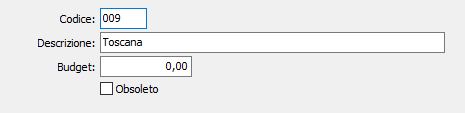

Zone
La tabella consente di creare le "zone" sulla base di un codice alfanumerico di 3 caratteri, che può essere inserito nelle anagrafiche clienti e fornitori nel caso in cui si desiderino ottenere stampe selettive per zona.
Il codice di zona può anche costituire un elemento di selezione per le statistiche di vendita. Date queste premesse, se l'utente non ha interesse per queste prestazioni può omettere tanto la codifica delle zone quanto l'inserimento del relativo codice nell'anagrafica di clienti o fornitori.

CODICE: codice alfanumerico di 3 caratteri per identificare la Zona in esame. Sul campo sono attive le funzioni di ricerca (F9) sulla tabella stessa.
DESCRIZIONE: campo alfanumerico di 50 caratteri per descrivere la Zona.
BUDGET: campo numerico per l’eventuale inserimento di un budget commerciale sulla zona in esame.
OBSOLETO: flag attivabile dall’utente per inibire il possibile utilizzo dell’elemento di tabella in esame nelle successive transazioni.